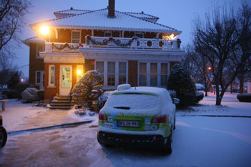
Der var sne i luften over Peru. Vi ringede fra bilen via vores uundværlige satellittelefon og sikrede os at der var plads på et hotel, som vi havde fundet på internettet. Men da vi kom til adressen sidst på eftermiddagen stod der Maple Leaf Inn, bed and breakfast. Og der var ingen hjemme. Vi ringede igen, værterne ville være hjemme om en time. Vi vandrede ned i byen, besøgte det lokale værtshus hvor folk var føget sammen ved baren. Ved jernbanen strøg togene forbi i snefoget med en langstrakt fløjten. Da vi vendte tilbage til huset og kom indenfor hos de venlige værter, viste det sig at vi var kørt til den forkerte adresse. Men det var kun heldigt, for vi fik et luxusophold med god strøm til Grønne. Huset var stadig fuldt af nisser og engle og et yndigt juletræ i hvert eneste værelse.
Nina
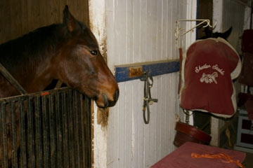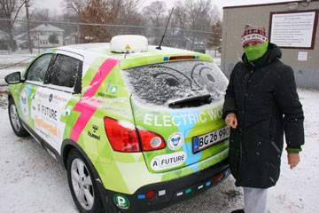
Der var ingen RV-parks i nærheden. Mens vi tøede op i en kaffebar søgte jeg på nettet. Indianapolis State Fair skulle have "hook-ups". Hvis vi ikke havde ringet ville vi have troet alt var lukket. Men på en øde plads var der faktisk stik med strøm. Det begyndte at sne kraftigt imens vi holdt ladepause. På den store dyrskueplads besøgte vi travbanen og Dan Statlers stald med fuldblodsheste og bagefter så vi ishockeytræning. Det frøs 6 grader da vi kørte videre og motorvejen nordpå var lukket. I byen Peru måtte vi standse ved et lille motel. Varmeovnen blev taget fra og Grønne tilsluttet værelsets eneste 220 V-stik. Vi krøb ned i vores soveposer.
Hjalte
 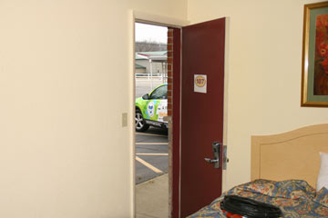
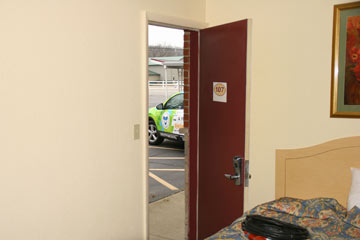
Gårdene i Indiana ser ud til at være i bedre stand end sydpå. Hvidmalede træhuse, hundrede år gamle og fulde af spir og verandaer kanter hovedgaden i de småbyer vi kører igennem. Det bliver hurtigt mørkt og vi bevæger os gennem et usynligt landskab af skygger og fjerne lys. Vi hører spøgelseshistorie på CD-spilleren og lægger først ikke mærke til de blå blink som følger efter os. Jeg stopper og Nina hopper ud. En politimand nærmer sig med en lommelygte. Han lyser ind i kabinen. Forbipasserende har ringet til politiet fordi vi kørte langsomt og han vil se om vi er intoxicated. Elbil? Spare på strømmen? Så forstår han bedre og ønsker os god tur!
Hjalte
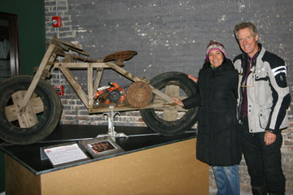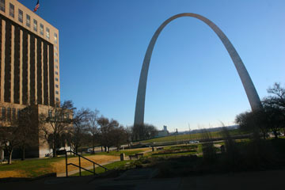
Teresa gav os en hvirvelsvindtur gennem St. Louis. Byen var vært for verdensudstillingen i 1904, 106 år før Shanghai, og dengang var automobilet en stor nyhed. Et smukt glashus med palmer var bevaret fra dengang. Eero Sarinens gigantiske bue ved Missisippifloden gjorde et stort indtryk. Dristig og enkel. På The MOTO Museum så vi en imponerende samling sjældne motorcykler, og verdens eneste træmotorcykel! Før vi kørte videre prøvede vi Teresa os Marks Tesla sportsvogn. Overbevisende! 200 Kw trækker fremad! Så måtte vi sige farvel til de søde mennesker og kørte ind i Illinois.
Hjalte
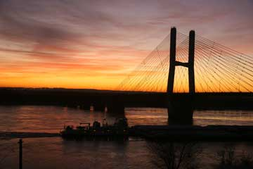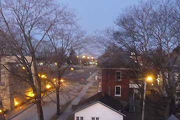
Solen stod op over Missisippifloden og kastede lyserødt lys ind i det store værelse på husets øverste etage. Derfra havde vi udsigt til den nye bro over floden. Kulpramme mosede op ad floden. Efter en gåtur fulgt af en god stor kop morgenkaffe og en lang elbil-snak i køkkenet kørte vi til Jacks garage. Først fik Grønne dog en vask, så den igen kom til at stråle. Så startede TVoptagelsen hvor Grønne, Hjalte og jeg blev præsenteret. I kan se os på <www.evtv.me>. Det var svært at løsrive sig, men vi måtte videre mod Detroit Autoshow. Vi har travlt og kører derfor hver dag og holder tre timers ekstra ladepause ved frokosttid. For at spare på strømmen har vi endnu ikke tændt for varmen i bilen. Vi var iskolde da vi kom frem til Mark og Theresa, som boede i et smukt hus i St. Louis med en Tesla i garagen - og et godt strømstik til Grønne, som de venlige mennesker havde intalleret forbi vi kom! De er to læger omkring 40 og har også et par store Audier og en flyvemaskine.
Nina
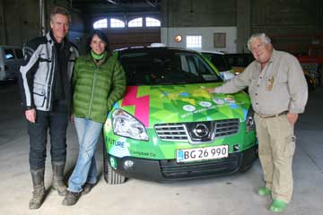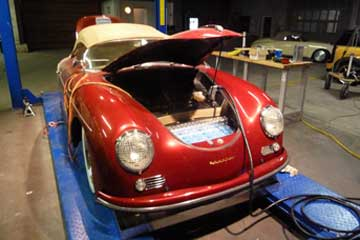
Det var blevet mørkt inden vi nåede frem til Cape Girardeau, en lille by ved Missisippi. Vejen blev lille og mørk og vi troede næsten at vi var kørt forkert, da vi pludselig kom til en stor garagebygning hvor Jack Rikard tog imod os. Lys og varme og masser af plads. I hans TV-studie, som også var et værksted, stod de flotteste veteran Porche sportsvogne som Jack havde konverteret til el. Hver uge laver Jack et TV program på nettet om biler og hvordan man bygger dem om til elbiler. Han var dybt inde i batteriteknologi og elbiler og var en spændende person at tale med. Vi kom med hjem til familien, som boede i et stort og eventyrligt hus i tre etager bygget for 130 år siden af en gammel flodkaptajn helt ude ved bredden af den store flod. Jacks kone og deres datter og barnebarn, og Jacks mor var der, og vi satte os omkring et stort rundt bord og spiste en dejlig middag som Jacks kone havde lavet! USA kan ikke leve uden olie, sagde Jack, billig olie og billig transport er med i alle facetter af vores liv. Sæt prisen op til europæisk niveau og USA bryder sammen. Han forudså voldsomme omvæltning i en nær fremtid.
Nina
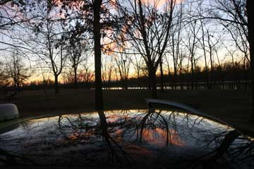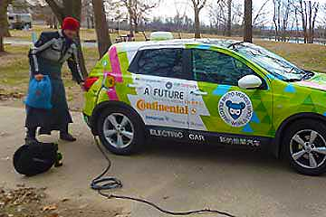
Temperaturen faldt fra 23 grader i går til 2 grader her til morgen. Der var ikke de mindste rester af fyrværkeri at se noget steds, og vi havde næsten heller ikke hørt eller set noget om natten. Lidt søvnig kører jeg bilen til Newport. Endnu er vi ikke begyndt at tænde varmeapparatet i bilen. Så da vi købte ind i Wallmart fandt jeg et par store joggingbukser at tage udenpå de to par bukser jeg allerede har på. Alle de små restauranter var lukkede, så for første gang spiste vi på en kæderestaurant. Vi valgte Buffet og det var billigt, billigere end selv at lave mad. De fleste amerikanere har slet ikke mad i deres køkken, kun snacks og soft drinks og isterninger. Familiemedlemmerne er sjældent hjemme samtidig, så i mange hjem er spisebordet på vej ud. At lave mad selv er kun for de velhavende.
Nina
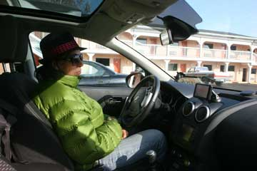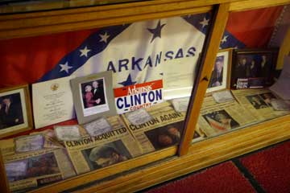
Arkansas var rønner på landet, Little Rock fuld af Clintoniania og en meget stille nytårsaften. Lige da vi var kørt ind i Little Rock og holdt for rødt lys standsede en dame sin bil og rullede vinduet ned. "Er den virkelig eletrisk?" råbte hun "Hvor fedt, velkommen til Little Rock!" Hun ledte os hen til River Market, et kommunalt initiativ hvor folk fra hele verden solgte hjemmelavet mad. En syrisk dame serverede falafel for os og bagefter drak vi stærkt kaffe ved en anden bod. Familier hyggede sig og et juletræ pyntede. Stemningen var afslappet og god. Verden er gået fremad siden Little Rock var synonym med racisme og vold. På motellet i Prescott nord for Little Rock viste fjernsynet fest på Times Square i New York. Nina havde købt champagne og glas og vi skålede for det nye år. Og en time senere skålede vi igen, nu sammen med festen i Chicago og sådan fortsatte vi alle tidszoner igennem. GODT NYTÅR!
Hjalte
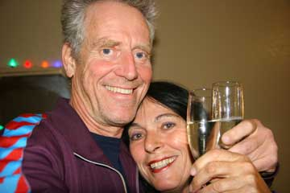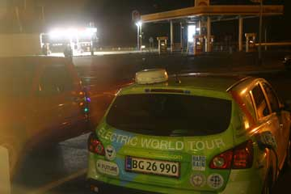
Jeg Grønne står udenfor motellet og summer strøm fra Nina og Hjaltes værelse. Jeg har nu rejst 189 dage med dem. På de første 20.000 km. har jeg ikke fået vist alt hvad jeg kan. Hvis sandheden skal frem er de bange for at træde speederen i bund. De lunter jorden rundt. Men OK, det gælder om at komme langt på hver opladning og med en elbil må man køre langsomt for at komme hurtigt frem. Ovre ved flagstangen sender et par unge fyre nytårsraketter afsted. Nu ser jeg Nina og Hjalte kigge ud af vinduet. De skåler. GODT NYTÅR ALLESAMMEN!
Grønne
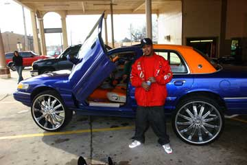
Da jeg kørte ud fra motellet virkede bremsen i bilen næsten ikke. Vi havde været ude for det tidligere, og havde et lille relæ med, som Hjalte hurtigt fik udskiftet, så Grønne kunne bremse igen. Om eftermiddagen søgte vi forgæves efter 220 volt strøm i Texarkana. Vi hilste på et par unge fyre som morede sig med at have en bil højt oppe på nogle overdimensionerede hjul og bukserne langt nede. På KOA campingpladsen udenfor byen fandt vi en meget venlig bestyrer og et godt strømstik. Elektricitet er billig. Efter tre en halv time havde Grønne suget for 1$ og 40cent. Sammen med en hær af store lastbiler kørte vi ud ad den mørke landevej og ind i Arkansas.
Nina
 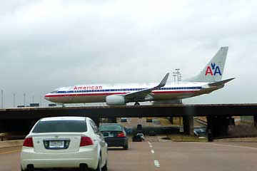
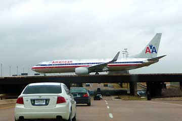
Ida og Elliot vinkede farvel i Dallas lufthavn. Nina og jeg har nydt hvert eneste øjeblik med dem i Grønne. På de engelske jomfruøer venter far Hans og badeferie. Vi vil se dem igen i New York om en måned. I Richardson, en forstad til Dallas, ventede Paul fra Electro Auto Association. Vi fik tilsluttet Grønne i hans garage. Elbilklubben er aktiv her i Dallas og mange har selv konstrueret elbiler. Paul har bestilt en Leaf, Nissans første elbil, og han er nr. 6 på ventelisten hos den lokale forhandler. Han fortæller at for mange elbil-kørere er et vigtigt motiv for at vælge el, at USA skal være uafhængig af olie (fra Mellemøsten). Vi var ude og spise og kunne overnatte hos Paul, men vi må nordpå og tog afsked med endnu en meget hjælpsom og sympatisk elbilven.
Hjalte